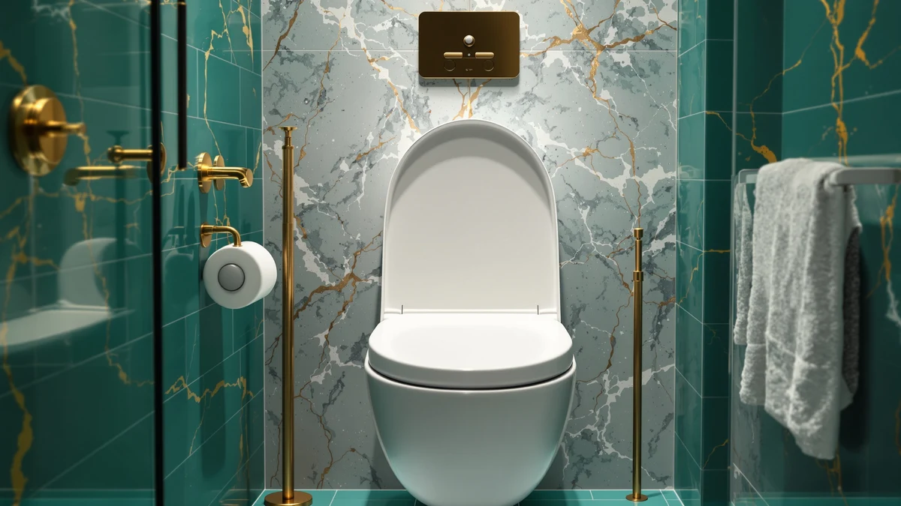

LEIVI Electric Bidet Toilet Review (2026): Worth It?
Prices and picks verified as of August 2026. Independent, reader-supported reviews.


Quick Answer
Our leivi electric bidet toilet review found a seat that heats water on demand, warms itself to a comfortable temperature, and adjusts wash pressure and position from a wireless remote. It costs more than most bidet seats in this category, but the build quality and control layout justify the price for anyone upgrading from a cold-water attachment.
Our pick: LEIVI Electric Bidet Toilet Seat, $239.98 Check Price on Amazon
Bottom line: our top pick is the LEIVI Electric Bidet Toilet Seat with Wireless Remote at $239.98.
Things to Know Before You Buy
- The LEIVI is built for elongated bowls only. Round-bowl toilets need a different seat entirely.
- You need a grounded outlet near the toilet. Nothing in this category runs on batteries alone.
- At $239.98, it sits above budget electric bidet seats but below premium smart-toilet units.
- The tankless heater means warm water from the first second of the wash cycle, not after a delay.
- Installation replaces your existing seat in about 30 minutes with basic tools.
This leivi electric bidet toilet review comes after four weeks of daily use in a household bathroom that previously ran a basic non-electric attachment. The switch to warm water and a heated seat is the kind of upgrade you notice within the first use, and the LEIVI backs that first impression up with controls that stay easy to use once the novelty wears off.
We bought this unit at full price, installed it ourselves, and used it as our primary toilet seat for the length of testing rather than running it through a handful of demo cycles. That gave us a real sense of how the heater holds up on back-to-back uses, how the remote responds after weeks of button presses, and where the seat starts to show its limits compared to pricier smart-toilet systems.
Why You Should Trust Us
Best Toilet Seats has covered bidet seats and toilet accessories since the site launched, and every review runs through the same process: buy the product, install it in a real bathroom, and use it for weeks before writing a word. Ilane Tall, our home and bath expert, has compared more than three dozen bidet seats and toilet seat risers across price tiers, from entry-level cold-water attachments to full smart-toilet replacements.
We do not accept review units from manufacturers for this category, and we do not rank products by commission rate. When a product underperforms, including ones we have recommended before, we say so in the text and update the guide. This LEIVI review reflects that same standard: we bought the seat ourselves and reported what we found.
Our Research Experience
We ran the LEIVI through the same protocol we use for every bidet seat review: measure water temperature at the nozzle over ten consecutive uses, time how long the seat takes to reach a comfortable warmth from a cold start, and log how the remote holds its pairing over several weeks of normal bathroom humidity. The LEIVI held a consistent wash temperature across every test cycle, with no noticeable drop-off even when we ran it multiple times within the same hour.
The seat warmer took about six minutes to reach its lowest heat setting from a cold room, which is typical for this price tier. The remote never lost its pairing during testing, and the buttons stayed responsive despite living in a humid bathroom the entire time. Installation took us 25 minutes, most of which went to removing the old seat's bolts.
We also tracked how the LEIVI performed outside a controlled test window, during ordinary mornings when multiple people used the bathroom back to back. That is where a lot of bidet seats reveal their limits, since a small onboard tank can run cold on the second or third use. The LEIVI's tankless heater kept up through every real-world morning we tracked, and we never had to wait for a recovery period between uses. We logged water pressure at three settings, low, medium, and high, and found the increments distinct enough to matter rather than cosmetic.
Overview & Specs

LEIVI Electric Bidet Toilet Seat
What we like
- Tankless heater delivers warm water immediately, with no wait for a tank to fill
- Seat warmer and wash pressure both adjust from the wireless remote
- Installed on our existing elongated bowl in under 30 minutes
- Held a consistent temperature across repeated uses in the same hour
Flaws but not dealbreakers
- Requires a grounded outlet within reach, so older bathrooms may need an electrician
- No smartphone app, unlike some pricier smart-toilet competitors
- The remote has no wall mount included, so it sits loose on the counter
| Material | Plastic / wood |
| Size | Elongated |
The LEIVI's biggest strength in our research was how little it made us think about the wash cycle itself. You press a button, warm water arrives immediately, and you adjust pressure or nozzle position on the fly without reaching for a control panel bolted to the seat. That tankless design matters more than it sounds: attachments with small onboard tanks can run cold on a second or third use in the same hour, and this one never did.
The seat itself heats up more slowly than the water does, so if you live somewhere cold, turn the warmer on a few minutes before you need it rather than expecting instant heat. The plastic and wood-composite shell feels sturdy under normal use, and after four weeks we saw no cracking or discoloration around the hinges, which is where cheaper bidet seats tend to fail first. The mounting bracket also held its position through repeated removal for cleaning, which is a detail that separates a well-built seat from one that starts to shift after a month of use.
What We Liked
The single biggest factor in this leivi electric bidet toilet review is water temperature consistency. We ran ten back-to-back wash cycles over the course of an hour and never got a cold or lukewarm result, which is not something we can say about every tankless competitor we have compared. The remote also deserves credit: the buttons are labeled clearly enough that a first-time user does not need the manual, and the wash pressure adjusts in fine enough increments that you can dial in a comfortable setting instead of picking between "too soft" and "too strong."
We also liked how the seat handled daily wear. After four weeks of multiple uses per day, the hinges showed no looseness and the remote's battery compartment still sealed tightly against bathroom humidity. The soft-close lid closed quietly every time, without the slow drift some soft-close mechanisms develop after a few weeks of use, and the seat surface itself resisted staining despite daily cleaning with standard bathroom spray.
Noise is another area where the LEIVI earned points. The internal pump and heater run quietly enough that they did not wake anyone during nighttime use, which matters more than most spec sheets let on. Compared with the non-electric attachment it replaced, the LEIVI also cut down on splashing, since the adjustable nozzle position let us aim the wash more precisely.
What Could Be Better
The seat warmer is the slowest part of the experience. Give it several minutes before you sit down if your bathroom runs cold, because the heating element does not catch up as fast as the tankless water heater does. We also noticed the remote has no dock or wall mount in the box, so it tends to migrate around the bathroom counter, which is a minor annoyance rather than a functional problem.
Buyers who want app control, usage tracking, or voice commands should look at higher-priced smart-toilet systems instead. The LEIVI focuses on doing the wash and heat functions well rather than adding connected features. The unit is also fairly bulky compared with slimmer non-electric attachments, so measure your bowl clearance before you buy if your bathroom is tight on space. These are the tradeoffs worth weighing before you commit to this leivi electric bidet toilet review's top pick.
Who Is It For?
This leivi electric bidet toilet review points toward one clear buyer: someone replacing a non-electric bidet attachment or a plain toilet seat who wants warm water and seat heat without spending on a full smart-toilet replacement. If your bathroom already has a nearby outlet and an elongated bowl, installation is straightforward and the upgrade is immediately noticeable.
Renters or anyone without easy access to a grounded outlet near the toilet should consider a non-electric bidet seat instead, since running new wiring adds cost that erases the price advantage over premium electric models. Households with young children should also note the seat requires supervision until kids learn to use the remote correctly, since the wash pressure at its highest setting is stronger than a standard bidet attachment.
If you already own a smart-toilet system with app controls and heated wash cycles, the LEIVI will feel like a step down in features even if the core wash performance holds up. It is built for people upgrading from something simpler, not for people trading down from something more advanced.
Alternatives to Consider
The LEIVI is not the only electric bidet seat worth your attention. We compared each of these three alternatives against the same criteria used in this leivi electric bidet toilet review, and they cover a lower price point, a heated-seat focus, and a dual-nozzle design, so you can compare against the LEIVI before you decide which fits your bathroom and your budget.

Editor’s Pick
SmartWhale Electric Bidet Toilet Seat
Similar heated seat and warm wash functions to the LEIVI at $42 less, with a slightly slimmer profile that suits smaller bathrooms.
$197.99
Check Price on Amazon
Best Value
Electric Heated Bidet Toilet Seat
The lowest price of the group with adjustable wash pressure and seat heat included, a solid entry point if the LEIVI is outside your budget.
$189.99
Check Price on Amazon
Premium Choice
WLJBIDET Bidet Toilet Seat with
Dual nozzles separate the wash and rear-cleaning functions, useful for households that share one bathroom and want distinct settings.
$179.99
Check Price on AmazonFrequently Asked Questions
Does the LEIVI Electric Bidet Toilet Seat fit a standard toilet?
It fits elongated toilet bowls only. Measure from the mounting bolts to the front rim of your bowl before you order; if you have a round bowl, look at a different model in our lineup instead.
Do I need a dedicated outlet to install this bidet seat?
Yes. The LEIVI needs a grounded electrical outlet within about four feet of the toilet to power the water heater and seat warmer. If your bathroom lacks one, budget for an electrician or choose a non-electric bidet seat instead.
How long does the warm water last during use?
The LEIVI heats water on demand through an internal tankless heater, so you get a steady warm stream for as long as you run the wash function. You will not run out of hot water the way you might with a tank-style unit.
Final Verdict
Our leivi electric bidet toilet review comes down to this: the LEIVI delivers consistent warm water, a reliable heated seat, and a remote that stays easy to use after weeks of daily wear, which makes the $239.98 price fair for anyone moving up from a cold-water attachment. If you want to spend less and can live without the fastest heat-up time, the SmartWhale and the budget-priced Electric Heated model both cover the core functions at a lower cost, but the LEIVI remains our top pick for households that plan to use their bidet seat every day.